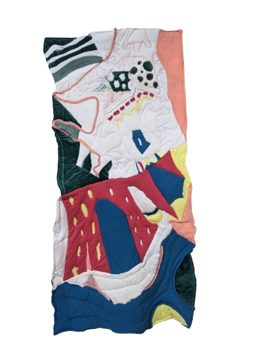
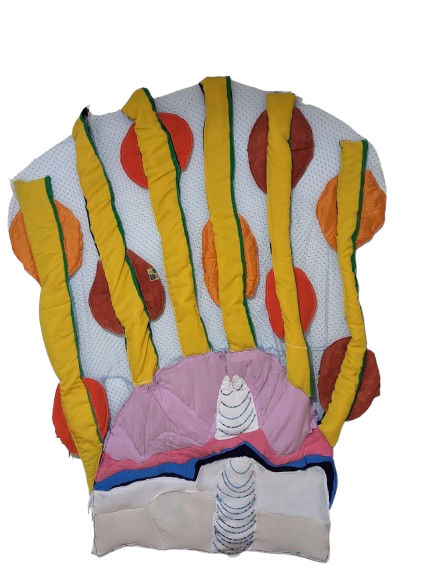
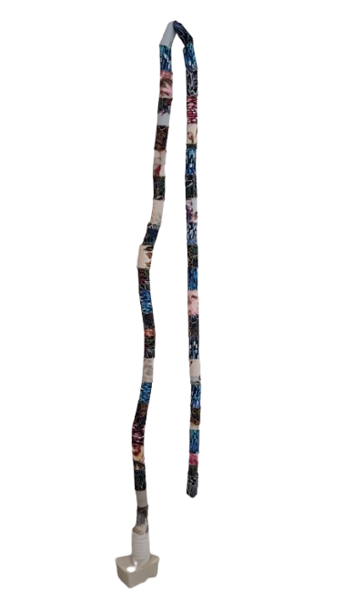
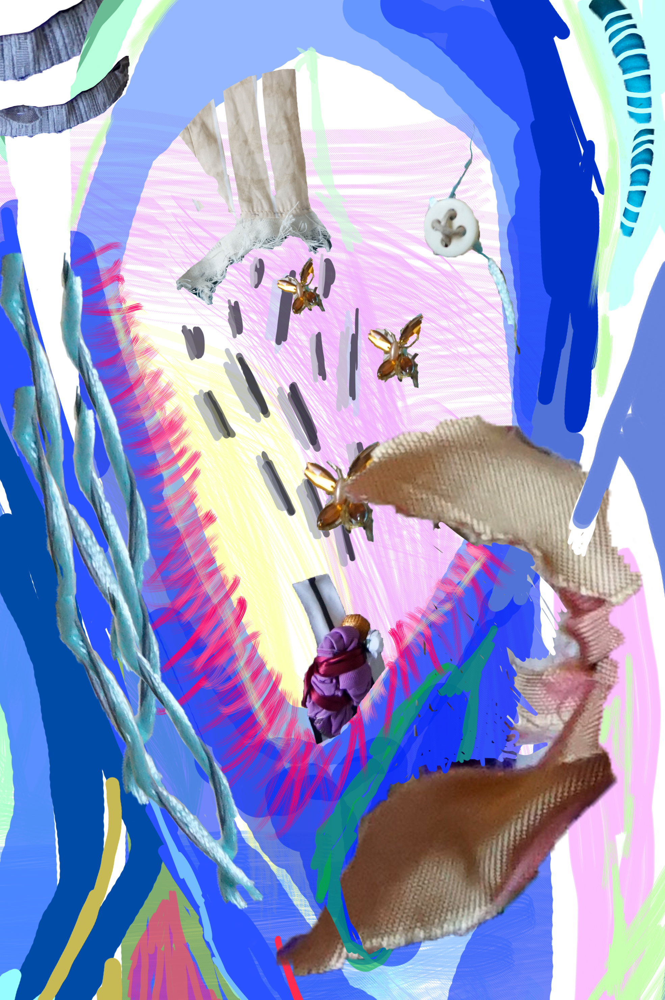
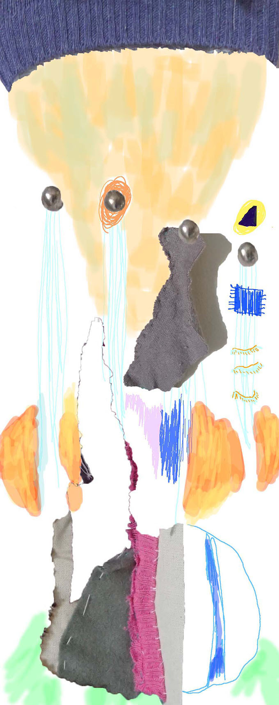
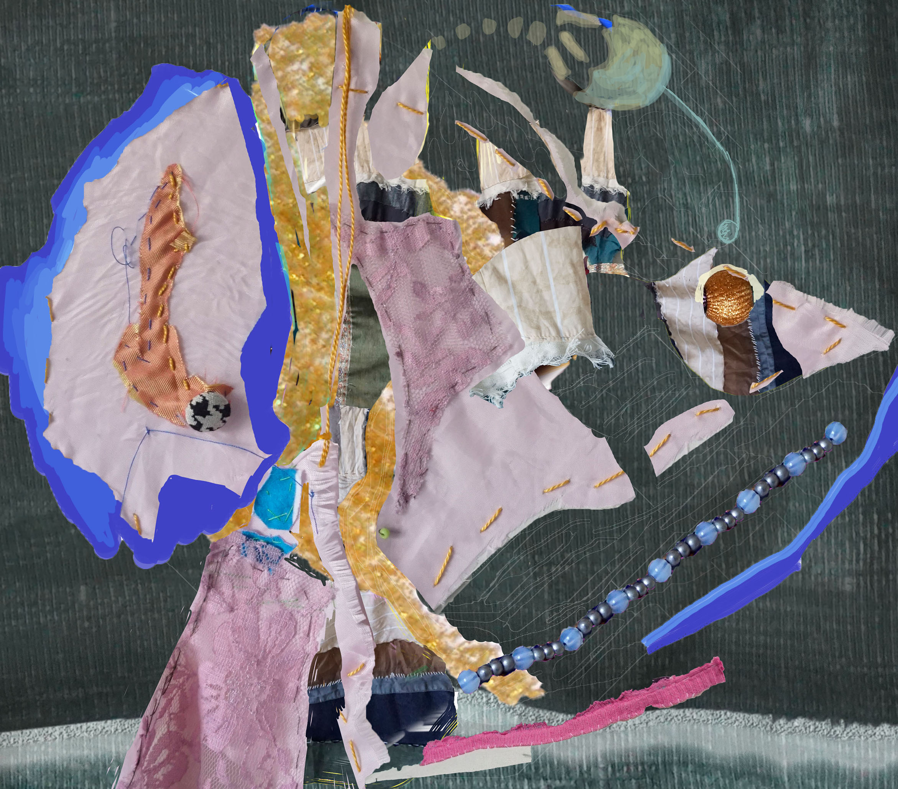
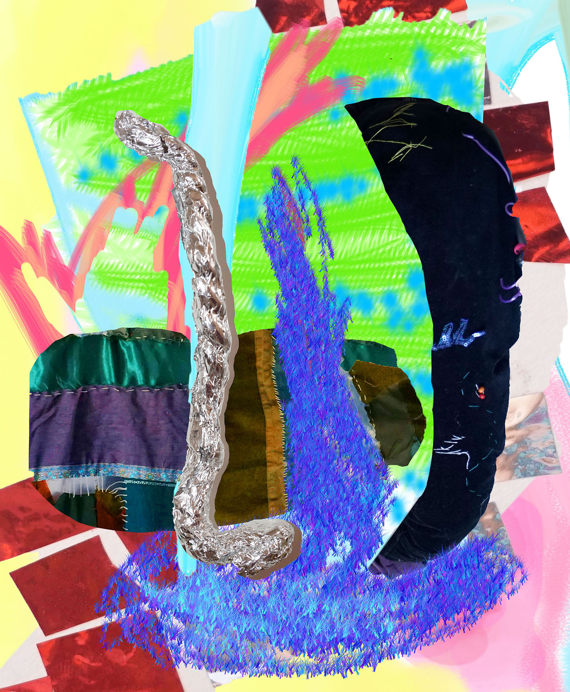
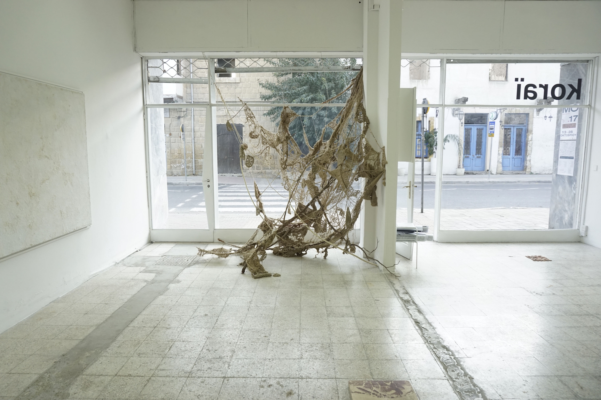

alexandra pambouka
Visual Arts
Work
Tenderscapes
The series of artworks revolves around the tension between softness and hardness and contemplates both the toll and the value of staying “soft” in a world that keeps hardening.



Nature folk kitch
Trying to identify the connection between nature, folk culture and kitch culture digital assamblages of digital and physical artworks




Continuous thread
A socially engaged project that is presented diferently each time. The installation is a crochet of jute twin CONTINUOUS THREAD ARCHIVE
